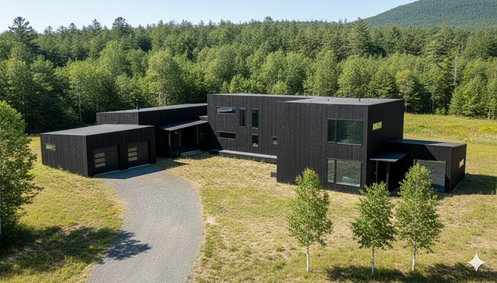

Franconia, New Hampshire
Just Haus Alpha
Just Haus Alpha is a house Daniel Zajic is building in Franconia. This site is the record of that work: what the house is, why it is put together this way, and what has been measured or modeled so far.

It comes out of renovations. After years of working on older houses, he wanted to start without the problems those buildings had already collected: a house shaped around comfort, simplicity, and access. He hired four architects, then drew this plan himself.
The question he is testing is whether one person can build a high-performance house. A low cost, and a house that produces more energy than it uses, are goals. They are not results this site is ready to call finished. Two years in, the building is still an experiment, and a separate garage is underway.
